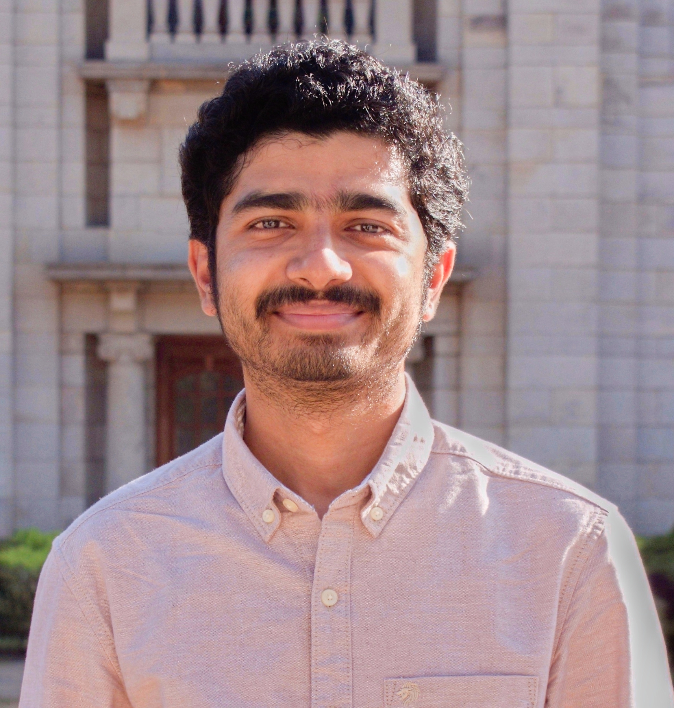

Utsav Biswas
Ecologist.
Photographer.
Observer.
I am a PhD researcher working at the intersection of ecology, remote sensing, GIS and the study of natural systems. Photography is the other way I spend time paying attention to those systems.
I photograph birds, mammals, insects, landscapes and the quieter details of field life. Over time, this website will become a curated archive of that work — accompanied, where useful, by species information, field notes and stories.
The goal is not to publish everything. It is to keep the photographs that continue to mean something.